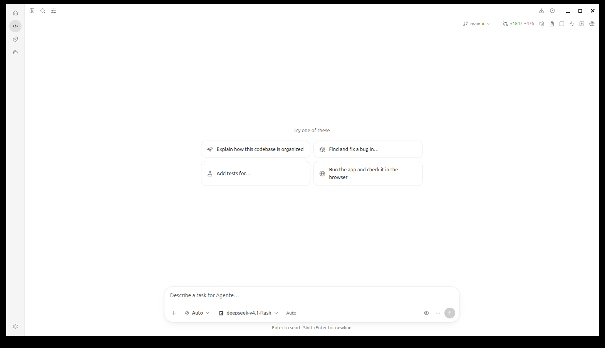
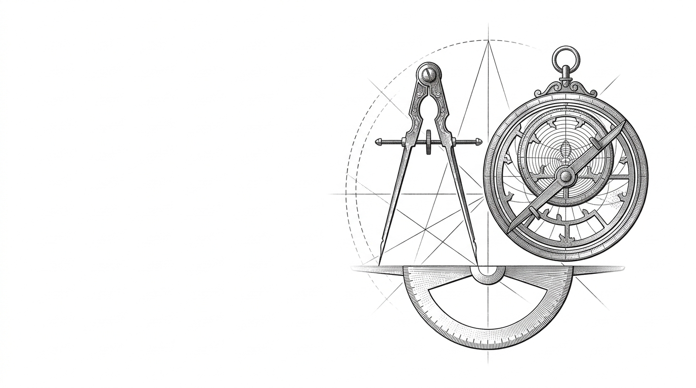

An open-source Rust agent for quiet, exact engineering.
Desktop app, keyboard-first terminal UI, and headless server — sharing one transparent tool loop, inline diff approvals, and local GGUF inference.

Chapter I · Three Calibrated Instruments
Desktop, terminal, and server from one core.
Move between the Desktop workspace (Home, Code, Design), the minimal Rust TUI, and a persistent remote daemon without changing how sessions, plans, or approvals behave.
- DesktopHome · Code · Design · DOCX/PPTX/XLSX
- TerminalPlan / Build / Auto · ACP stdio
- Serveragente serve · Docker · WebSocket

Chapter II · Organic Parallelism
Branching subagents in isolated git worktrees.
Delegate exploration, planning, and parallel edits to child agents that each own their own worktree, cost counter, and stop button — and revert or fork any conversation from any message.
- Parallel readsRead, grep, and list run concurrently
- Isolated writesEach editing subagent gets a worktree
- Time travelRevert file edits or fork from any prompt
Chapter III · Strata & Local Memory
Cloud APIs or local GGUF weights, stored plainly on disk.
One context budget governs compaction, token warnings, and cache telemetry across OpenRouter, DeepSeek, MiniMax, Ollama, LM Studio, and built-in llama.cpp.
- Local inferenceGGUF on CPU or GPU via llama.cpp
- Context arithmeticSingle budget for meter & compaction
- OwnershipEverything in ~/.agente on your machine

Appendix · Acquisition
Begin with Desktop, CLI, or Server.
Terminal CLI
Single Rust binary for Linux x64/arm64, Windows, and macOS from source.
Copy curl script →